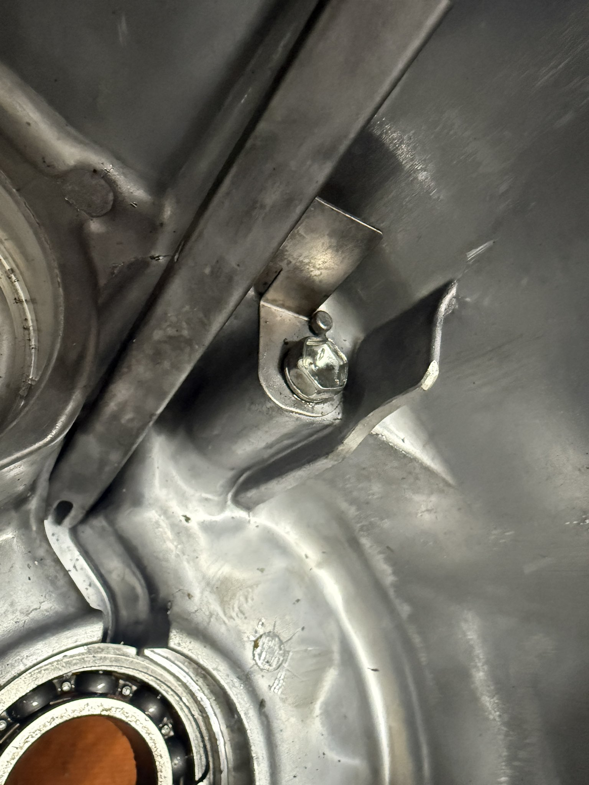
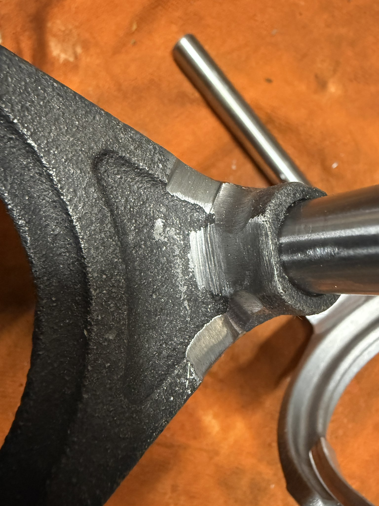
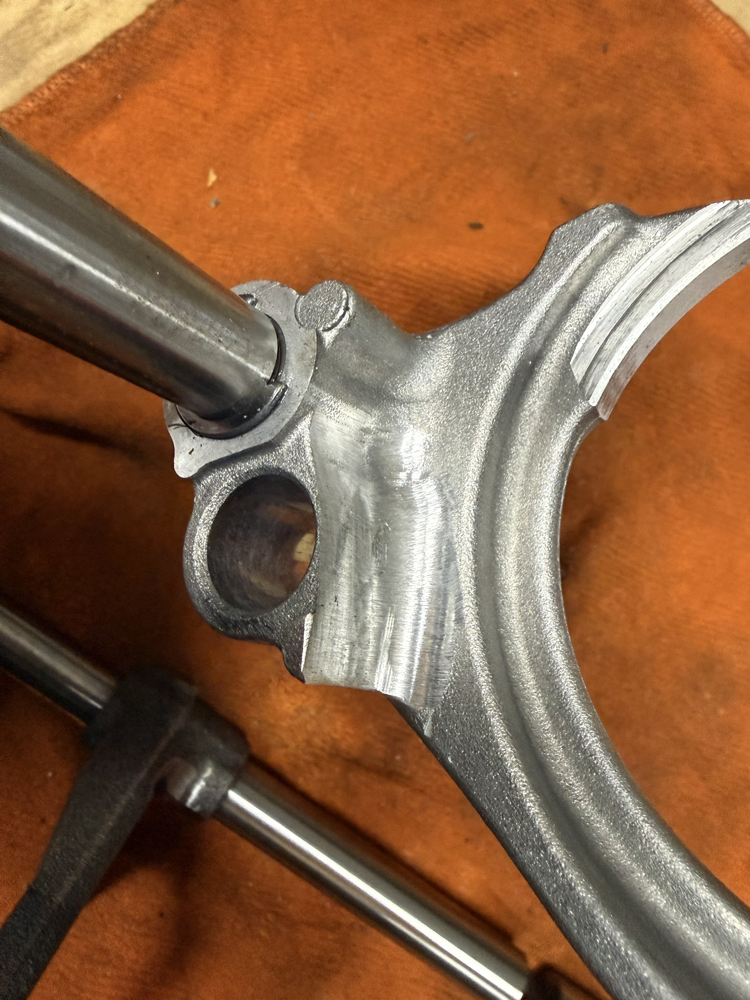
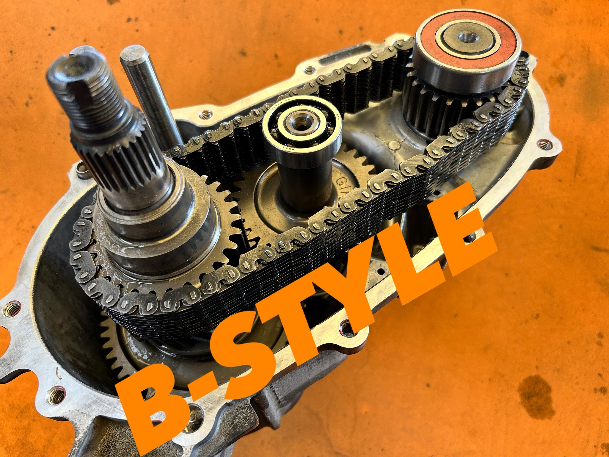

皆様こんにちは、B-STYLEです。
「ダウンギアって取り付けが難しそう…」と思っていませんか？今回は実際の組み付け作業を写真でお見せします。やることは至ってシンプル。開けて・削って・入れ替えて・閉めるだけです。
まずトランスファーを開ける
作業の出発点はトランスファーケースを開けること。ケース内部はこのような構造になっています。ベアリング、シフトフォーク、各種ギアが整然と収まっています。初めて見ると複雑に感じるかもしれませんが、ダウンギアの交換に関係する部分は限られています。

精度が必要な作業というわけではありません。要領さえわかれば難しくありません。画像のように削って、


B-STYLEダウンギアに入れ替えて、閉める
純正ギアを取り外したら、B-STYLEのエキストラダウンギアを組み込みます。チェーン・ギア・ベアリングを正しい位置に収めてケースを閉じれば完成です。

組み付け完了状態。チェーン・ギア・ベアリングがきれいに収まっている。
作業のまとめ
- トランスファーケースを開ける
- ケース、フォーク付け根を削る
- B-STYLEエキストラダウンギアに入れ替える
- ケースを閉じる
【注意】加工箇所は3か所です。基本的な手順はサービスマニュアルを参考にしてください。ただし、本作業はすべてがマニュアル通りではない部分もあります。内容を十分に理解できない方は作業しないでください。
なお、B-STYLEの製品に取扱説明書を同梱していないのは意図的なものです。「理解できる方だけに触れてほしい」——それがB-STYLEの考え方です。
以上です。もう悩む必要はありません。工程を整理してしまえば、ショップに依頼する際のイメージも明確になるはずです。
取り付けを依頼できる提携ショップはリンクページからご確認いただけます。製品についてのご質問はお問い合わせからどうぞ。
引き続きB-STYLEをよろしくお願いいたします。